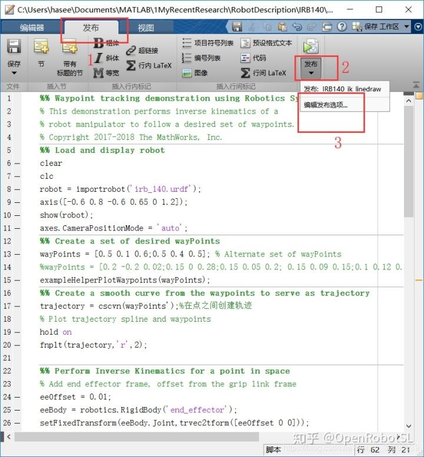
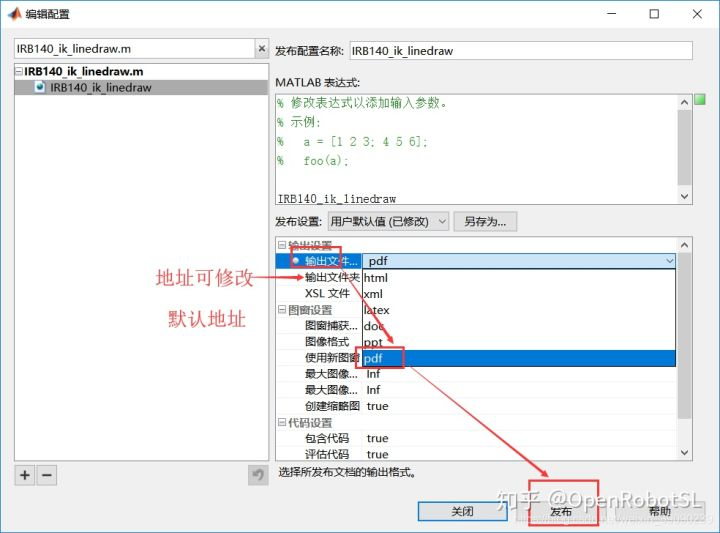
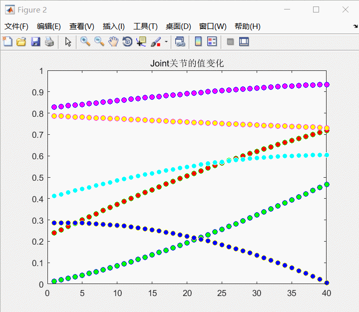

Home
1、前记：
发布 MATLAB? 代码文件 (.m) 可创建包括您的代码、注释和输出的格式化文档。发布代码的常见原因是与其他人共享文档以用于教学或演示，或者生成您代码的可读外部文档。要在 MATLAB 编辑器中创建同时包含您的代码、格式化内容和输出的交互式文档，请参阅在实时编辑器中创建实时脚本。
2、步骤----打开要发布的代码文件（m文件）-----点击发布----选择编辑发布选项。如下：

点击输出文件，选择格式和修改地址，点击发布

如：源代码为 Robotics System Toolbox中的机器人运动 (3)中的例子
%% Waypoint tracking demonstration using Robotics System Toolbox
% This demonstration performs inverse kinematics of a
% robot manipulator to follow a desired set of waypoints.
% Copyright 2017-2018 The MathWorks, Inc.
%% Load and display robot
clear
clc
robot = importrobot('irb_140.urdf');
axis([-0.6 0.8 -0.6 0.65 0 1.2]);
show(robot);
axes.CameraPositionMode = 'auto';
%% Create a set of desired wayPoints
wayPoints = [0.5 0.1 0.6;0.5 0.4 0.5]; % Alternate set of wayPoints
%wayPoints = [0.2 -0.2 0.02;0.15 0 0.28;0.15 0.05 0.2; 0.15 0.09 0.15;0.1 0.12 0.1; 0.04 0.1 0.2;0.25 0 0.15; 0.2 0.2 0.02];
exampleHelperPlotWaypoints(wayPoints);
%% Create a smooth curve from the waypoints to serve as trajectory
trajectory = cscvn(wayPoints');%在点之间创建轨迹
% Plot trajectory spline and waypoints
hold on
fnplt(trajectory,'r',2);
%% Perform Inverse Kinematics for a point in space
% Add end effector frame, offset from the grip link frame
eeOffset = 0.01;
eeBody = robotics.RigidBody('end_effector');
setFixedTransform(eeBody.Joint,trvec2tform([eeOffset 0 0]));
addBody(robot,eeBody,'link_6');
ik = robotics.InverseKinematics('RigidBodyTree',robot);
weights = [0.1 0.1 0 1 1 1];
initialguess = robot.homeConfiguration;
% Calculate the inverse kinematic solution using the "ik" solver
% Use desired weights for solution (First three are orientation, last three are translation)
% Since it is a 4-DOF robot with only one revolute joint in Z we do not
% put a weight on Z rotation; otherwise it limits the solution space
numTotalPoints =40;
% Evaluate trajectory to create a vector of end-effector positions
eePositions = ppval(trajectory,linspace(0,trajectory.breaks(end),numTotalPoints));
% Call inverse kinematics solver for every end-effector position using the
% previous configuration as initial guess
for idx = 1:size(eePositions,2)
tform = trvec2tform(eePositions(:,idx)');
configSoln(idx,:) = ik('end_effector',tform,weights,initialguess);
initialguess = configSoln(idx,:);
end
%% Visualize robot configurations
title('Robot waypoint tracking visualization')
hold on
axis([-0.6 0.8 -0.6 0.65 0 1.3]);
for idx = 1:size(eePositions,2)
show(robot,configSoln(idx,:), 'PreservePlot', false,'Frames','off');
pause(0.1)
end
%% Plot joints values
A = cat(1,configSoln.JointPosition);
clf
figure
stem(A)%overview
%% Joints
joint1=A(1:40,1);
joint2=A(41:80,1);
joint3=A(81:120,1);
joint4=A(121:160,1);
joint5=A(161:200,1);
joint6=A(201:240,1);
figure
stem(joint1,'LineStyle','none','MarkerFaceColor','r','MarkerEdgeColor','g')
title('Joint关节的值变化')
hold on
stem(joint2,'LineStyle','none','MarkerFaceColor','g','MarkerEdgeColor','b')
stem(joint3,'LineStyle','none','MarkerFaceColor','b','MarkerEdgeColor','y')
stem(joint4,'LineStyle','none','MarkerFaceColor','y','MarkerEdgeColor','m')
stem(joint5,'LineStyle','none','MarkerFaceColor','c','MarkerEdgeColor','w')
stem(joint6,'LineStyle','none','MarkerFaceColor','m','MarkerEdgeColor','b')发布后生成的PDF文档效果为：

3、后记：figure图框的利用---打印图窗、点击箭头修改图占框大小、插入图例修改data标签，以便给论文提取所需的图。

======================================================================
我的测试结果及程序
下面是我测试的代码：